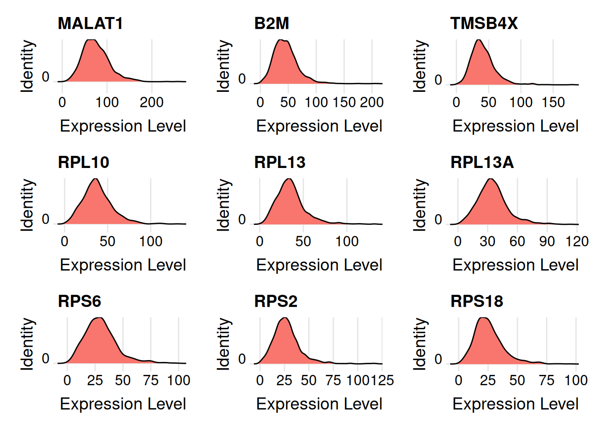

Last updated: 2025-09-01
Checks: 7 0
Knit directory: muse/
This reproducible R Markdown analysis was created with workflowr (version 1.7.1). The Checks tab describes the reproducibility checks that were applied when the results were created. The Past versions tab lists the development history.
Great! Since the R Markdown file has been committed to the Git repository, you know the exact version of the code that produced these results.
Great job! The global environment was empty. Objects defined in the global environment can affect the analysis in your R Markdown file in unknown ways. For reproduciblity it’s best to always run the code in an empty environment.
The command set.seed(20200712) was run prior to running
the code in the R Markdown file. Setting a seed ensures that any results
that rely on randomness, e.g. subsampling or permutations, are
reproducible.
Great job! Recording the operating system, R version, and package versions is critical for reproducibility.
Nice! There were no cached chunks for this analysis, so you can be confident that you successfully produced the results during this run.
Great job! Using relative paths to the files within your workflowr project makes it easier to run your code on other machines.
Great! You are using Git for version control. Tracking code development and connecting the code version to the results is critical for reproducibility.
The results in this page were generated with repository version d1938b1. See the Past versions tab to see a history of the changes made to the R Markdown and HTML files.
Note that you need to be careful to ensure that all relevant files for
the analysis have been committed to Git prior to generating the results
(you can use wflow_publish or
wflow_git_commit). workflowr only checks the R Markdown
file, but you know if there are other scripts or data files that it
depends on. Below is the status of the Git repository when the results
were generated:
Ignored files:
Ignored: .Rproj.user/
Ignored: data/1M_neurons_filtered_gene_bc_matrices_h5.h5
Ignored: data/293t/
Ignored: data/293t_3t3_filtered_gene_bc_matrices.tar.gz
Ignored: data/293t_filtered_gene_bc_matrices.tar.gz
Ignored: data/5k_Human_Donor1_PBMC_3p_gem-x_5k_Human_Donor1_PBMC_3p_gem-x_count_sample_filtered_feature_bc_matrix.h5
Ignored: data/5k_Human_Donor2_PBMC_3p_gem-x_5k_Human_Donor2_PBMC_3p_gem-x_count_sample_filtered_feature_bc_matrix.h5
Ignored: data/5k_Human_Donor3_PBMC_3p_gem-x_5k_Human_Donor3_PBMC_3p_gem-x_count_sample_filtered_feature_bc_matrix.h5
Ignored: data/5k_Human_Donor4_PBMC_3p_gem-x_5k_Human_Donor4_PBMC_3p_gem-x_count_sample_filtered_feature_bc_matrix.h5
Ignored: data/97516b79-8d08-46a6-b329-5d0a25b0be98.h5ad
Ignored: data/Parent_SC3v3_Human_Glioblastoma_filtered_feature_bc_matrix.tar.gz
Ignored: data/brain_counts/
Ignored: data/cl.obo
Ignored: data/cl.owl
Ignored: data/jurkat/
Ignored: data/jurkat:293t_50:50_filtered_gene_bc_matrices.tar.gz
Ignored: data/jurkat_293t/
Ignored: data/jurkat_filtered_gene_bc_matrices.tar.gz
Ignored: data/pbmc20k/
Ignored: data/pbmc20k_seurat/
Ignored: data/pbmc3k.h5ad
Ignored: data/pbmc3k/
Ignored: data/pbmc3k_bpcells_mat/
Ignored: data/pbmc3k_export.mtx
Ignored: data/pbmc3k_matrix.mtx
Ignored: data/pbmc3k_seurat.rds
Ignored: data/pbmc4k_filtered_gene_bc_matrices.tar.gz
Ignored: data/pbmc_1k_v3_filtered_feature_bc_matrix.h5
Ignored: data/pbmc_1k_v3_raw_feature_bc_matrix.h5
Ignored: data/refdata-gex-GRCh38-2020-A.tar.gz
Ignored: data/seurat_1m_neuron.rds
Ignored: data/t_3k_filtered_gene_bc_matrices.tar.gz
Ignored: r_packages_4.4.1/
Ignored: r_packages_4.5.0/
Untracked files:
Untracked: analysis/bioc_scrnaseq.Rmd
Untracked: bpcells_matrix/
Untracked: data/Caenorhabditis_elegans.WBcel235.113.gtf.gz
Untracked: data/GCF_043380555.1-RS_2024_12_gene_ontology.gaf.gz
Untracked: data/arab.rds
Untracked: data/astronomicalunit.csv
Untracked: data/femaleMiceWeights.csv
Untracked: m3/
Unstaged changes:
Modified: analysis/information.Rmd
Modified: analysis/isoform_switch_analyzer.Rmd
Note that any generated files, e.g. HTML, png, CSS, etc., are not included in this status report because it is ok for generated content to have uncommitted changes.
These are the previous versions of the repository in which changes were
made to the R Markdown (analysis/scrnaseq_bimodal.Rmd) and
HTML (docs/scrnaseq_bimodal.html) files. If you’ve
configured a remote Git repository (see ?wflow_git_remote),
click on the hyperlinks in the table below to view the files as they
were in that past version.
| File | Version | Author | Date | Message |
|---|---|---|---|---|
| Rmd | d1938b1 | Dave Tang | 2025-09-01 | Is scRNA-seq expression bimodal? |
First, single-cell expression has repeatedly been shown to exhibit a characteristic bimodal expression pattern, wherein the expression of otherwise abundant genes is either strongly positive or undetected within individual cells.
This is due in part to low starting quantities of RNA such that many genes will be below the threshold of detection, but there is also a biological component to this variation (termed extrinsic noise in the literature) that is conflated with the technical variability.
We and other groups have shown that the proportion of cells with detectable expression reflects both technical factors and biological differences between samples. Results from synthetic biology also support the notion that bimodality can arise from the stochastic nature of gene expression.
Import from server.
seurat_obj <- readRDS(url("https://davetang.org/file/pbmc3k_seurat.rds", "rb"))
seurat_objAn object of class Seurat
32738 features across 2700 samples within 1 assay
Active assay: RNA (32738 features, 0 variable features)
1 layer present: countsUse Seurat version 4.
seurat_wf_v4 <- function(seurat_obj, scale_factor = 1e4, num_features = 2000, num_pcs = 30, cluster_res = 0.5, debug_flag = FALSE){
seurat_obj <- NormalizeData(seurat_obj, normalization.method = "LogNormalize", scale.factor = scale_factor, verbose = debug_flag)
seurat_obj <- FindVariableFeatures(seurat_obj, selection.method = 'vst', nfeatures = num_features, verbose = debug_flag)
seurat_obj <- ScaleData(seurat_obj, verbose = debug_flag)
seurat_obj <- RunPCA(seurat_obj, verbose = debug_flag)
seurat_obj <- RunUMAP(seurat_obj, dims = 1:num_pcs, verbose = debug_flag)
seurat_obj <- FindNeighbors(seurat_obj, dims = 1:num_pcs, verbose = debug_flag)
seurat_obj <- FindClusters(seurat_obj, resolution = cluster_res, verbose = debug_flag)
seurat_obj
}
seurat_obj <- seurat_wf_v4(seurat_obj)Warning: The default method for RunUMAP has changed from calling Python UMAP via reticulate to the R-native UWOT using the cosine metric
To use Python UMAP via reticulate, set umap.method to 'umap-learn' and metric to 'correlation'
This message will be shown once per sessionseurat_objAn object of class Seurat
32738 features across 2700 samples within 1 assay
Active assay: RNA (32738 features, 2000 variable features)
3 layers present: counts, data, scale.data
2 dimensional reductions calculated: pca, umapMost highly expressed genes in cluster 0.
wanted <- seurat_obj@meta.data$seurat_clusters == "0"
cluster0_cells <- row.names(seurat_obj@meta.data[wanted, ])
cluster0_exp <- Matrix::rowMeans(seurat_obj[, cluster0_cells]@assays$RNA$count)
sort(cluster0_exp, decreasing = TRUE) |>
head(n = 9) |>
names() -> my_genes
my_genes[1] "MALAT1" "B2M" "TMSB4X" "RPL10" "RPL13" "RPL13A" "RPS6" "RPS2"
[9] "RPS18" Plot the distribution.
Seurat::RidgePlot(seurat_obj, features = my_genes, idents = "0", layer = 'count')Warning: The `slot` argument of `FetchData()` is deprecated as of SeuratObject 5.0.0.
ℹ Please use the `layer` argument instead.
ℹ The deprecated feature was likely used in the Seurat package.
Please report the issue at <https://github.com/satijalab/seurat/issues>.
This warning is displayed once every 8 hours.
Call `lifecycle::last_lifecycle_warnings()` to see where this warning was
generated.Warning: `PackageCheck()` was deprecated in SeuratObject 5.0.0.
ℹ Please use `rlang::check_installed()` instead.
ℹ The deprecated feature was likely used in the Seurat package.
Please report the issue at <https://github.com/satijalab/seurat/issues>.
This warning is displayed once every 8 hours.
Call `lifecycle::last_lifecycle_warnings()` to see where this warning was
generated.Picking joint bandwidth of 6.19Picking joint bandwidth of 4.24Picking joint bandwidth of 3.59Picking joint bandwidth of 3.42Picking joint bandwidth of 2.93
Picking joint bandwidth of 2.93
Picking joint bandwidth of 2.93Picking joint bandwidth of 2.44
Picking joint bandwidth of 2.44
sessionInfo()R version 4.5.0 (2025-04-11)
Platform: x86_64-pc-linux-gnu
Running under: Ubuntu 24.04.2 LTS
Matrix products: default
BLAS: /usr/lib/x86_64-linux-gnu/openblas-pthread/libblas.so.3
LAPACK: /usr/lib/x86_64-linux-gnu/openblas-pthread/libopenblasp-r0.3.26.so; LAPACK version 3.12.0
locale:
[1] LC_CTYPE=en_US.UTF-8 LC_NUMERIC=C
[3] LC_TIME=en_US.UTF-8 LC_COLLATE=en_US.UTF-8
[5] LC_MONETARY=en_US.UTF-8 LC_MESSAGES=en_US.UTF-8
[7] LC_PAPER=en_US.UTF-8 LC_NAME=C
[9] LC_ADDRESS=C LC_TELEPHONE=C
[11] LC_MEASUREMENT=en_US.UTF-8 LC_IDENTIFICATION=C
time zone: Etc/UTC
tzcode source: system (glibc)
attached base packages:
[1] stats graphics grDevices utils datasets methods base
other attached packages:
[1] future_1.49.0 Seurat_5.3.0 SeuratObject_5.1.0 sp_2.2-0
[5] workflowr_1.7.1
loaded via a namespace (and not attached):
[1] deldir_2.0-4 pbapply_1.7-4 gridExtra_2.3
[4] rlang_1.1.6 magrittr_2.0.3 git2r_0.36.2
[7] RcppAnnoy_0.0.22 spatstat.geom_3.5-0 matrixStats_1.5.0
[10] ggridges_0.5.6 compiler_4.5.0 getPass_0.2-4
[13] png_0.1-8 callr_3.7.6 vctrs_0.6.5
[16] reshape2_1.4.4 stringr_1.5.1 crayon_1.5.3
[19] pkgconfig_2.0.3 fastmap_1.2.0 labeling_0.4.3
[22] promises_1.3.2 rmarkdown_2.29 ps_1.9.1
[25] purrr_1.0.4 xfun_0.52 cachem_1.1.0
[28] jsonlite_2.0.0 goftest_1.2-3 later_1.4.2
[31] spatstat.utils_3.1-5 irlba_2.3.5.1 parallel_4.5.0
[34] cluster_2.1.8.1 R6_2.6.1 ica_1.0-3
[37] spatstat.data_3.1-6 bslib_0.9.0 stringi_1.8.7
[40] RColorBrewer_1.1-3 reticulate_1.43.0 spatstat.univar_3.1-4
[43] parallelly_1.44.0 lmtest_0.9-40 jquerylib_0.1.4
[46] scattermore_1.2 Rcpp_1.0.14 knitr_1.50
[49] tensor_1.5.1 future.apply_1.11.3 zoo_1.8-14
[52] sctransform_0.4.2 httpuv_1.6.16 Matrix_1.7-3
[55] splines_4.5.0 igraph_2.1.4 tidyselect_1.2.1
[58] abind_1.4-8 rstudioapi_0.17.1 yaml_2.3.10
[61] spatstat.random_3.4-1 spatstat.explore_3.5-2 codetools_0.2-20
[64] miniUI_0.1.2 processx_3.8.6 listenv_0.9.1
[67] lattice_0.22-6 tibble_3.2.1 plyr_1.8.9
[70] withr_3.0.2 shiny_1.11.1 ROCR_1.0-11
[73] evaluate_1.0.3 Rtsne_0.17 fastDummies_1.7.5
[76] survival_3.8-3 polyclip_1.10-7 fitdistrplus_1.2-4
[79] pillar_1.10.2 whisker_0.4.1 KernSmooth_2.23-26
[82] plotly_4.11.0 generics_0.1.4 rprojroot_2.0.4
[85] RcppHNSW_0.6.0 ggplot2_3.5.2 scales_1.4.0
[88] globals_0.18.0 xtable_1.8-4 glue_1.8.0
[91] lazyeval_0.2.2 tools_4.5.0 data.table_1.17.2
[94] RSpectra_0.16-2 RANN_2.6.2 fs_1.6.6
[97] dotCall64_1.2 cowplot_1.2.0 grid_4.5.0
[100] tidyr_1.3.1 nlme_3.1-168 patchwork_1.3.0
[103] cli_3.6.5 spatstat.sparse_3.1-0 spam_2.11-1
[106] viridisLite_0.4.2 dplyr_1.1.4 uwot_0.2.3
[109] gtable_0.3.6 sass_0.4.10 digest_0.6.37
[112] progressr_0.15.1 ggrepel_0.9.6 htmlwidgets_1.6.4
[115] farver_2.1.2 htmltools_0.5.8.1 lifecycle_1.0.4
[118] httr_1.4.7 mime_0.13 MASS_7.3-65